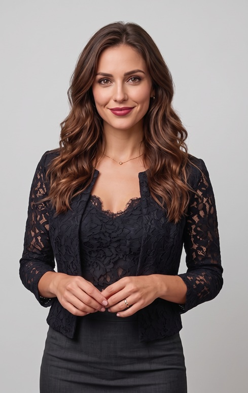

Storyboard · Appuntamento · Wine Bar
Primo Incontro
Primo Incontro è un breve storyboard fotorealistico tratto da un semplice script. L'obiettivo è verificare la consistenza visiva di volti, espressioni e costumi in una sequenza narrativa continua, senza ricorrere ad apprendimenti su training set mirati (LoRA), oppure realizzare le img una per una. Lo storyboard è corredato da un post (vedi link a sezione ComfyUI dei Post) che descrive la pipeline tecnicamente.
SINOSSIIncontro di Dating. Jim arriva in anticipo al wine bar concordato, si siede e aspetta. Quando Barbara entra, la saluta sorridente per metterla a proprio agio. Lei è un po' nervosa ma incuriosita. La conversazione assume subito un proprio ritmo naturale. Incroci di sguardi, rilassati dal vino e dal whisky. La serata si allunga, la sala rimane vuota intorno a loro, e quello che era un appuntamento di prova diventa qualcosa di più. Sicuramente sperato da entrambi, ma non calcolato. I due si avvicinano fino a stamparsi un bacio con sigillo di eventuali successive conferme.
PERSONAGGI35 anni, potrebbe essere un giovane dirigente o un agente immobiliare. Capelli castani pettinati all'indietro, barba corta. Blazer di lana verde scuro su maglione verde chiaro, camicia da boutique romana popolare. Sorriso caldo e sicuro.

30 anni, molto bella, elegante e piuttosto appariscente. Lunghi capelli mossi castani, blazer in pizzo nero. Un po' scontata come scelta stilistica, ma di sicuro impatto. Leggermente sospettosa all'inizio ma con uno sguardo promettente.
Fotogramma a figura intera usato come condizionamento spaziale. Fornire questa immagine come vincolo di posa consente al modello di generare proporzioni corporee coerenti e un'andatura naturale negli shot in cui Jim è in movimento, senza riaddestrare il modello su geometrie specifiche. L'identità del personaggio (volto, giacca, cintura, orologio) viene iniettata separatamente e simultaneamente.